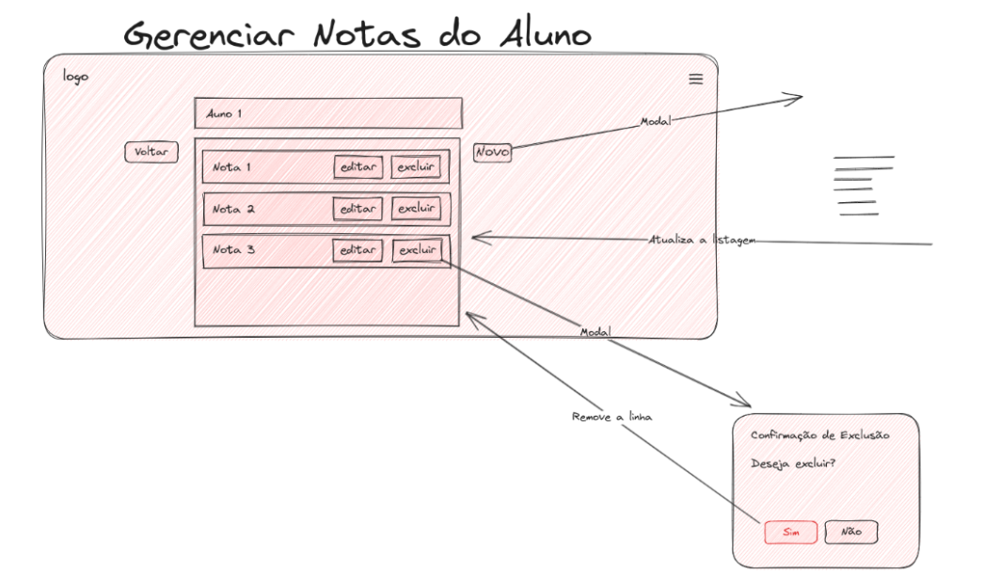

BACKLOG API 1 SEMESTRE
Épicos
- Exportação de Dados (Back-end): A consolidação e exportação de dados costumam ser tarefas realizadas no back-end, pois envolvem o processamento e a preparação de dados para exportação.
- Gerenciamento de Turmas (curso) : Esse épico está relacionado à criação, atualização e visualização de turmas, que envolvem a interface do usuário para realizar essas operações.
- Gerenciamento de grupo : Esse épico está relacionado à criação, atualização e visualização de grupos, que envolvem a interface do usuário para realizar essas operações.
- Gerenciamento de Alunos : Esse épico lida com a adição, atualização e visualização de informações de alunos, bem como a adição de notas parciais, todos os quais são interações do usuário com a interface.
- Gerenciamento de Ciclos de Entrega e Scores: Este épico envolve a criação, atualização e visualização de ciclos de entrega e scores parciais, que são aspectos visíveis para o usuário.
- Configurações Globais (Back-end): Este épico envolve a definição de parâmetros globais e o afeta o funcionamento do sistema. Essa configuração geralmente é tratada no back-end.
- Carregamento de Dados massivo de Alunos (Back-end): A tarefa de carregar informações de alunos a partir de arquivos é uma operação que envolve o back-end, pois requer manipulação de dados.
Detalhamento dos Épicos
Épico 1: Exportação de Dados
🟠 Prioridade média
História de Usuário 1: Como um administrador, eu quero selecionar as opções de gerenciamento e relatórios. Isso envolve a exportação de dados.
Frontend:
- Botão no Index.html que gere relatórios vindo dos: gerenciamento_turmas.html, gerenciamento_alunos.html, gerenciamento_ciclos.html, gerenciamento_global.html.

Backend:
-
Rota da API
-
/api/relatorio/criar: Consolida os dados e exporta em formato PDF.
- Consolida os dados e os exporta em formato PDF.
Épico 2: Gerenciamento de Turmas
História de Usuário 1: Como um administrador, eu quero visualizar a lista de turmas disponíveis, seus respectivos grupos com os alunos e alunos.
Frontend:
- Gerenciamento_turmas.html que conterá todas as turmas já criadas com ícone de edição e de exclusão em cada um deles.
- Deverá ser criado um campo onde serão inseridas as turmas de forma dinâmica.
- Botão para criar uma nova turma.

Backend
- Módulo gerenciador_turmas.py com funções para listar turmas.
- Rotas de API:
- /api/turmas/get: Retorna a lista de turmas disponíveis.
- /api/turmas/delete: Deletar uma turma.
História de Usuário 2: Como um administrador, eu quero criar uma nova turma com nome da turma, o professor e a associação de grupos pré-existentes ou nenhum grupo. A turma não precisa ser criada com grupo de alunos, mas precisa poder recebê-los. A turma só será ativa com grupo de alunos vinculados.
Frontend:
-
Template HTML para Gerenciamento de Turmas:
-
criar_turma.html que conterá os formulários para criar uma nova turma.
- A inclusão de grupos de alunos não precisa ser obrigatória.
- Nome da turma e professor são obrigatórios.
- Campo para procurar por um grupo pré-existente
- Campo para listar grupos

Backend:
- Módulo gerenciador_turmas.py com funções para criar uma turma com/sem novo grupo de alunos.
-
Rotas de API:
-
/api/turmas/criar: Manipula a criação de uma nova turma.
- /api/grupos /listar: Manipula a lista de grupos preexistente
História de Usuário 3: Como um administrador, eu quero editar as informações de uma turma e adicionar mais grupos.
- Template HTML para Gerenciamento de Turmas:
- editar_turmas.html que conterá os formulários de edição de uma nova turma, com possibilidade de ser levada a edição de grupo e de criar novo grupo.

- Módulo gerenciador_turmas.py com funções para atualizar informações de turma e editar grupo de alunos.
-
Rotas de API:
-
/api/turmas/atualizar/{id}: Manipula a atualização das informações de uma turma específica.
- /api/grupos/atualizar/{id}: Manipula a atualização das informações de um grupo de alunos específico.
História de Usuário 4: Como um administrador, eu quero excluir uma turma e um grupo de alunos.
Frontend:
Ícone de exclusão do grupo

- Módulo gerenciador_turmas.py com funções para excluir turmas.
- Rotas de API:
- /api/turmas/excluir/{id}: Manipula a exclusão de uma turma específica.
- /api/grupos/excluir/{id}: Manipula a exclusão de um grupo específico. (Vamos excluir o grupo?)
Épico 3: Gerenciamento de grupos
🔴 Prioridade Alta
História de Usuário 1: Como administrador, quero ver todos os grupos formados e associados às turmas.
Frontend:
- Template HTML para visualização de grupos:
- gerenciamento_grupos.html que conterá todos os grupos já criados com ícone de edição e de exclusão em cada um deles.
- Cada grupo deve apresentar seu nome e respectiva turma.

Backend:
- Módulo gerenciador_grupos.py com funções para listar os grupos associados às turmas.
- Rotas de API:
- /api/grupos/listar: Manipula a listagem de grupos.
História do usuário 2: Como um administrador, eu quero criar grupos de alunos associado a uma turma.
 Frontend
Frontend
- Template HTML para criar um grupo:
- criar_grupo.html que conterá os formulários de criação de um novo grupo
- Selecionar a qual turma ele pertencerá.
- Para adicionar um grupo é necessário inserir o nome do grupo e a turma.
Backend
- Módulo gerenciador_grupo.py com funções para adicionar pré-existente, e associar esse grupo a uma turma.
- Rotas de API:
- /api/tumas/listas: Fazer a leitura das turmas existentes.
- /api/grupos/adicionar: Manipula a adição de um novo grupo a uma turma.
História do usuário 3: Como um administrador, eu quero editar grupos, essas devem ser associado a uma turma.
Frontend
- Template HTML para Gerenciamento de um grupo:
- editar_grupo.html conterá as informações do grupo selecionado
- Pode levar a visualização das notas do aluno.

Backend:
- Módulo gerenciador_grupo.py com funções para adicionar alunos pré-existente, excluir aluno do grupo e editar qual turma esse grupo está associado.
- Rotas de API:
- /api/grupos/editar/{id}: Manipula para editar grupos.
História de Usuário 4: Como administrador, quero excluir os grupos Frontend:
- Template HTML para visualização de grupos:
- visualizacar_grupos.html que conterá todos os grupos já criados com ícone de edição e de exclusão em cada um deles.
- O ícone deve acionar a ação de excluir

Backend:
- Módulo gerenciador_grupos.py com funções para excluir o aluno selecionado.
- Rotas de API:
- /api/grupos/excluir/{id}: Manipula a listagem de grupos, excluindo o selecionado.
Épico 4: Gerenciamento de Alunos
🔴 Prioridade Alta
História de Usuário 1: Como um administrador, eu quero listar alunos existentes.
Frontend
- Template HTML para listar Alunos:
- gerenciamento_alunos.html que conterá um buscador e uma lista de alunos existentes, com botão para edição e de exclusão, e hiperlink para as notas do aluno

Backend
- Módulo gerenciador_alunos.py com funções para listar um aluno.
- Rotas de API:
- /api/alunos/listar: Manipula a adição de um novo aluno.
História de Usuário 2: Como um administrador, eu quero adicionar um novo aluno com informações pessoais e matrícula
Frontend
- Template HTML para Adicionar Alunos:
- gerenciamento_alunos.html que conterá o formulário para adicionar um novo aluno

Backend
- Módulo gerenciador_alunos.py com funções para adicionar um aluno.
- Rotas de API:
- /api/alunos/adicionar: Manipula a adição de um novo aluno.
História de Usuário 3: Como um administrador, eu quero editar as informações de um aluno existente.
Frontend:
- Template HTML para editar aluno:
- edicao_alunos.html que conterá o formulário para adicionar um novo aluno

Backend:
- Módulo gerenciador_alunos.py com funções para atualizar(editar) informações de alunos.
- Rotas de API: /api/alunos/atualizar/{id}: Manipula a atualização das informações de um aluno específico.
História de Usuário 4: Como um administrador, eu quero excluir alunos.
Frontend:
- Template HTML para editar aluno :
- gerenciamento_alunos.html que um botão para exclusão do aluno

Backend:
- Módulo gerenciador_alunos.py com funções para excluir alunos.
- Rotas de API: /api/alunos/excluir/{id}: Manipula a atualização das informações de um aluno específico.
Épico 5: Gerenciamento de Ciclos de Entrega e Scores
🟠 Prioridade média
História de Usuário 1: Como um administrador, eu quero visualizar(listar) as notas de um aluno.
Preciso criar um campo para exibir o FEE total e parcial.
Qual o cálculo do FEE? FEE = ((Score do Ciclo de Entrega 1 (C1) _ Peso de C1) + ... + (Score do Ciclo de Entrega N (CN) _ Peso de CN)) / Soma dos Pesos de C
Frontend:
- Template HTML para Gerenciamento de Ciclos de Entrega: gerenciamento_ciclos.html que conterá o aluno, as turmas que estão matriculadas e as respectivas novas.

Backend:
- Módulo gerenciador_ciclos.py com funções para listar as turmas e as notas associadas aquele aluno.
- Rotas de API: /api/notas/listar/aluno/{id}: Manipula a lista de um novo ciclo de entrega
História de Usuário 2: Como um administrador, eu quero adicionar uma nova nota a um aluno.
Frontend:
- Template HTML para Gerenciamento de Ciclos de Entrega: gerenciamento_ciclos.html que conterá os formulários para criar uma nova nota associada a uma turma.

Backend:
- Módulo gerenciador_ciclos.py com funções para criar nota associada a aluno e ao ciclo de entrega.
- Rotas de API: /api/notas/criar/turma/{id}: Manipula a criação de um novo ciclo de entrega
História de Usuário 3: Como um administrador, eu quero editar as notas de entrega existente.
Frontend:
- Template HTML para Gerenciamento de Ciclos de Entrega: editar_nota.html que conterá os formulários para editar uma nota pré-existente associada a uma turma.

Backend:
- Módulo gerenciador_ciclos.py com funções para as notas de ciclos de entrega.
- Rotas de API:
- /api/nota/atualizar/{id}: Manipula a atualização da nota em uma determinada entrega específica.
História de Usuário 4: Como um administrador, eu quero excluir notas parciais para os alunos em relação a um ciclo.
Frontend:
- Template HTML para Gerenciamento de Ciclos de Entrega: gerenciamento_ciclos.html que conterá um ícone que deletar a nota de um aluno associado a um ciclo e uma turma.

Backend:
- Módulo gerenciador_ciclos.py com funções para excluir as notas de ciclos de entrega.
- Rotas de API:
- /api/nota/excluir/{id}: Manipula a exclusão de uma nota em uma determinada entrega específica.
Épico 6: Configurações Globais
História de Usuário 1: Como um administrador, quero listar e ver os parâmetros globais das turmas
Frontend:
- Template HTML para Gerenciamento Global: gerenciamento_global.html que conterá as turmas existentes com seus respectivos parametros globais. Todas devem conter seu botão de editar.

Backend:
- Função para listar parâmetros globais no módulo gerenciador_configuracoes.py
- Rota de API: /api/globalsettings/listar
- para manipular a atualização dos parâmetros globais.
História de Usuário 2: Como um administrador, eu quero editar parâmetros globais, como datas do período letivo.
Frontend:
- Template HTML para Gerenciamento Global: gerenciamento_global.html que conterá os formulários para atualizar os parâmetros globais de cada turma.

Backend:
- Função para atualizar parâmetros globais no módulo gerenciador_configuracoes.py
- Rota de API :api/globalsettings/{id}/editar
- para manipular a atualização dos parâmetros globais.
Épico 7: Carregamento de Dados massivo
🟠 Prioridade média
História de Usuário 1: Como um administrador, eu quero carregar informações de alunos partir de arquivos.
Frontend:
- Tela de index.html terá um botão para update para o carregamento do CSV
- Sugestão ( botão que faz download de uma planilha padrão de sugestão para a importação do CSV)

Backend:
- Módulo carregamento_dados.py com funções para carregar informações de alunos e scores a partir de um arquivo CSV.
- Função para autenticar o formato do CSV, ou seja, ver se está dentro dos padrões.
- Função para realizar o cadastramento de cada um dos alunos.
- Rotas de API:
- /api/carregamento: Manipula o carregamento de dados a partir de arquivos.
Tabelas JSON:
Tabela alunos.json
Este arquivo contém informações sobre os alunos, identificados por números (por exemplo, "1" e "2"). Cada aluno tem um campo "nome" que armazena o nome dele.
{
"1": {
"nome": "Clara Santos"
},
"2": {
"nome": "Marcelo Tambalo"
}
}
Tabela global_setting.json
Este arquivo contém configurações globais do sistema, como a quantidade de sprints e a duração de cada sprint.
{
"quantidade_sprint": 4,
"dias_sprint": 15
}
Tabela grupo_alunos.json
Este arquivo associa cada aluno a um grupo específico. Cada aluno é identificado por um número, e cada entrada possui um campo "grupo" que indica a qual grupo o aluno pertence.
{
"1": {
"grupo": 1
},
"2": {
"grupo": 2
}
}
Tabela grupos.json
Este arquivo contém informações sobre os grupos, identificados por números. Cada grupo tem um campo "turma" que indica a qual turma ele pertence.
{
"1": {
"turma": 1
},
"2": {
"turma": 2
}
}
Tabela notas.json
Este arquivo registra as notas dos grupos em cada sprint. Cada aluno é identificado por um número, e para cada aluno, há uma lista de objetos que contêm informações sobre o grupo, o valor da nota e a sprint correspondente.
{
"1": [
{
"grupo": 1,
"valor": 8,
"sprint": 1
},
{
"grupo": 2,
"valor": 6,
"sprint": 2
}
],
"2": [
{
"grupo": 1,
"valor": 8,
"sprint": 1
},
{
"grupo": 1,
"valor": 6,
"sprint": 2
}
]
}
Tabela turmas.json
Este arquivo contém informações sobre as turmas, identificadas por números. Cada turma tem um nome, um professor responsável e uma data de início.
{
"1": {
"nome": "turma1",
"professor": "Nadalete",
"data_de_inicio": "21/02/2023"
},
"2": {
"nome": "Turma da manhã",
"professor": "Gorete",
"data_de_inicio": "21/02/2023"
}
}
Resumo tabelas JSON:
-
Cada aluno (identificado em alunos.json) pertence a um grupo (especificado em grupo_alunos.json), e cada grupo está associado a uma turma (em grupos.json).
-
As notas dos grupos em cada sprint são registradas em notas.json e estão associadas ao grupo correspondente e à sprint.
-
As configurações globais do sistema, como a quantidade de sprints e a duração de cada sprint, são definidas em global_setting.json.
-
Cada turma em turmas.json possui informações sobre seu nome, o professor responsável e a data de início.
BACKLOG 2º SPRINT
Épico 2: Gerenciamento de Turmas
🔴 Prioridade Alta
História de Usuário 1: Visualizar e Gerenciar Turmas Disponíveis
Como um administrador, eu quero visualizar a lista de turmas disponíveis e gerenciá-las.
Frontend:
- Crie um template HTML chamado
gerenciamento_turmas.htmlque exibirá todas as turmas já criadas. - Na interface, liste as turmas existentes, incluindo um ícone de edição e um ícone de exclusão para cada turma.
- Implemente um botão "Criar Turma" que abrirá um modal ao ser clicado.
- No modal "Criar Turma", inclua campos para inserir o nome da turma, nome do professor e um botão "Salvar". Quando o botão "Salvar" for clicado, envie um pedido POST para adicionar uma nova turma no arquivo
turmas.json. - Implemente um campo onde as turmas serão inseridas de forma dinâmica.
- Forneça um botão "Criar Nova Turma" para facilitar a criação de turmas.
Backend:
- Desenvolva um módulo chamado
gerenciador_turmas.pycom funções para listar turmas e deletar turmas. - Defina duas rotas de API:
/api/turmas/get: Esta rota retorna a lista de turmas disponíveis como um JSON./api/turmas/delete: Esta rota permite a exclusão de uma turma específica.
Fluxo de Atividade:
- O administrador acessa a página
gerenciamento_turmas.htmlno frontend. - Na interface, a lista de turmas disponíveis é exibida com ícones de edição e exclusão para cada turma.
- O administrador pode clicar no ícone de edição para editar as informações da turma ou clicar no ícone de exclusão para remover a turma.
- Ao clicar no botão "Criar Turma", um modal é exibido com campos para inserir o nome da turma e o nome do professor.
- O administrador preenche os campos e clica em "Salvar" para criar uma nova turma, que é adicionada dinamicamente à lista de turmas.
- O administrador pode usar o botão "Criar Nova Turma" para adicionar mais turmas conforme necessário.
História de Usuário 2: Criar Nova Turma com Associação Opcional de Grupos
Como um administrador, eu quero criar uma nova turma com o nome da turma e o nome do professor, com a opção de associá-la a grupos pré-existentes, mas sem a obrigatoriedade de incluir grupos no momento da criação. A turma só será considerada ativa quando tiver grupos de alunos vinculados.
Frontend:
- Crie um template HTML chamado
criar_turma.htmlque conterá os formulários para criar uma nova turma. - Inclua campos obrigatórios para inserir o nome da turma e o nome do professor.
- Implemente um campo onde o administrador possa procurar por grupos pré-existentes.
- Ofereça um campo para listar grupos e permita que o administrador escolha quais grupos deseja associar à nova turma.
- A inclusão de grupos de alunos não precisa ser obrigatória; deve ser opcional.
Backend:
- Desenvolva um módulo chamado
gerenciador_turmas.pycom funções para criar uma turma com ou sem a associação de grupos de alunos. - Defina duas rotas de API:
/api/turmas/criar: Esta rota manipula a criação de uma nova turma e permite ao administrador especificar o nome da turma, o nome do professor e a associação opcional com grupos de alunos./api/grupos/listar: Esta rota manipula a listagem de grupos pré-existentes que podem ser associados a uma nova turma.
Fluxo de Atividade:
- O administrador acessa a página
criar_turma.htmlno frontend. - Na interface, são exibidos campos para inserir o nome da turma e o nome do professor, ambos obrigatórios.
- O administrador pode usar um campo para procurar por grupos pré-existentes ou listar grupos disponíveis.
- O administrador escolhe quais grupos deseja associar à nova turma.
- O administrador preenche os campos necessários e pode optar por associar grupos ou deixar a associação de grupos vazia.
- Ao clicar em "Salvar" ou "Criar Turma", o frontend envia uma solicitação HTTP POST para a rota de API
/api/turmas/criar. - O módulo
gerenciador_turmas.pyno backend processa a solicitação, cria a nova turma e, se aplicável, associa grupos de alunos a ela. - A nova turma é criada e pode ser considerada ativa assim que grupos de alunos forem associados a ela.
História de Usuário 3: Editar Informações de Turma e Adicionar Grupos
Como um administrador, eu quero editar as informações de uma turma e adicionar grupos de alunos a ela.
Frontend:
- Crie um template HTML chamado
editar_turma.htmlque conterá os formulários para editar informações de uma turma existente. - Implemente a funcionalidade que permite editar os detalhes da turma, como nome e professor.
- Ofereça a capacidade de adicionar novos grupos de alunos à turma ou editar grupos existentes.
- Todos os componentes da tela devem ter IDs que podem ser mapeados aos IDs da turma.
Backend:
- Desenvolva um módulo chamado
gerenciador_turmas.pycom funções para atualizar informações de turma e editar grupos de alunos. - Defina duas rotas de API:
/api/turmas/atualizar/{id}: Esta rota manipula a atualização das informações de uma turma específica. O{id}identifica a turma que está sendo atualizada./api/grupos/atualizar/{id}: Esta rota manipula a atualização das informações de um grupo de alunos específico. O{id}identifica o grupo que está sendo atualizado.
Fluxo de Atividade:
- O administrador acessa a página
editar_turma.htmlno frontend. - Na interface, são exibidos campos para editar as informações da turma, como nome e professor.
- O administrador pode clicar para editar grupos existentes ou adicionar novos grupos de alunos à turma.
- Todos os componentes da tela possuem IDs que podem ser mapeados aos IDs da turma, permitindo a associação direta de informações.
- Quando o administrador realiza edições, ele pode clicar em "Salvar" para confirmar as alterações.
- O frontend envia solicitações HTTP POST para as rotas de API correspondentes,
/api/turmas/atualizar/{id}para turmas e/api/grupos/atualizar/{id}para grupos de alunos. - O módulo
gerenciador_turmas.pyno backend processa as solicitações e atualiza as informações da turma e dos grupos de alunos conforme necessário.
História de Usuário 4: Excluir uma Turma
Como um administrador, eu quero excluir uma turma.
Frontend:
- Implemente um ícone de exclusão para cada turma na interface do usuário.
- Quando o ícone de exclusão for clicado, ele deverá acionar uma confirmação do administrador antes de prosseguir com a exclusão.
Backend:
- Desenvolva um módulo chamado
gerenciador_turmas.pycom funções para excluir turmas. - Defina uma rota de API:
/api/turmas/excluir/{id}. O{id}identifica a turma que será excluída.
Fluxo de Atividade:
- O administrador acessa a página que exibe a lista de turmas no frontend.
- Na interface, cada turma é acompanhada de um ícone de exclusão.
- Quando o administrador clica no ícone de exclusão, uma confirmação é exibida para confirmar se ele deseja realmente excluir a turma.
- Após a confirmação, o frontend envia uma solicitação HTTP DELETE para a rota de API correspondente, por exemplo,
/api/turmas/excluir/{id}. - O módulo
gerenciador_turmas.pyno backend processa a solicitação e exclui a turma especificada do sistema.
Épico 6: Configurações Globais
🔴 Prioridade Alta
História de Usuário 1: Visualizar Parâmetros Globais
Como um administrador, eu quero ver os parâmetros globais das turmas.
Frontend:
- Crie um template HTML que permita ao administrador visualizar os parâmetros globais, incluindo a quantidade de sprints e o tempo de cada sprint.
- Exiba essas informações em uma interface de usuário clara e legível.
Backend:
- Desenvolva uma função no módulo
gerenciador_configuracoes.pyque permita listar os parâmetros globais das turmas. - Defina uma rota de API, por exemplo,
/api/globalsettings/get, que o frontend pode acessar para recuperar os parâmetros globais das turmas.
Fluxo de Atividade:
- O administrador acessa a página no frontend designada para visualizar os parâmetros globais.
- O frontend envia uma solicitação HTTP GET para a rota de API
/api/globalsettings/getno backend. - A função no módulo
gerenciador_configuracoes.pyno backend processa a solicitação e recupera os parâmetros globais das turmas. - Os parâmetros globais são enviados de volta ao frontend como uma resposta à solicitação.
- O frontend exibe os parâmetros globais na interface do usuário, permitindo que o administrador os visualize.
História de Usuário 2: Editar Parâmetros Globais
Como um administrador, eu quero editar parâmetros globais, como datas do período letivo.
Frontend:
- Crie um template HTML chamado
gerenciamento_global.htmlque conterá o formulário para atualizar os parâmetros globais de cada turma. - Implemente uma validação para garantir que os campos sejam preenchidos antes de permitir a submissão do formulário.
- Inclua um botão que permitirá ao administrador escrever as configurações atualizadas no arquivo
configuracoesglobais.jsonpor meio de um pedido HTTP POST.
Backend:
- Desenvolva um módulo chamado
gerenciador_configuracoes.pyque conterá uma função para atualizar os parâmetros globais no sistema. - Crie o arquivo
globalsettings.jsonno banco de dados ou no sistema de armazenamento relevante para manter as configurações globais. - Defina uma rota de API para processar as atualizações dos parâmetros globais, por exemplo,
/api/globalsettings/{id}/post, onde{id}identifica a turma ou entidade relevante para a qual os parâmetros estão sendo atualizados.
Fluxo de Atividade:
- O administrador acessa a página
gerenciamento_global.htmlno frontend. - O formulário é exibido, permitindo que o administrador edite os parâmetros globais, como quantidade de sprints e duração de sprints.
- O frontend valida os campos para garantir que todos estejam preenchidos corretamente.
- Após a validação bem-sucedida, o administrador clica no botão "Salvar".
- O frontend envia um pedido HTTP POST para a rota de API correspondente no backend.
- O módulo
gerenciador_configuracoes.pyno backend processa a solicitação, atualiza os parâmetros globais e salva as alterações no arquivoglobalsettings.json. - As configurações globais são atualizadas e refletem as mudanças feitas pelo administrador.